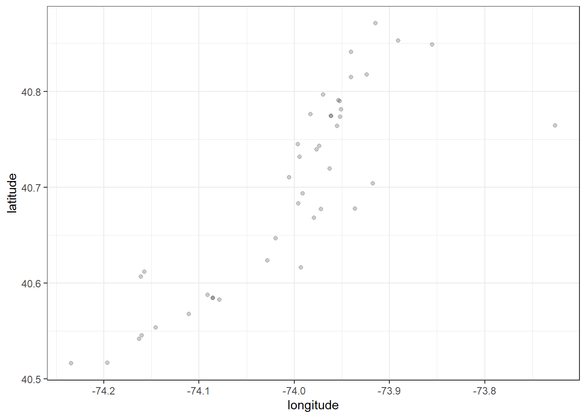

leaflet package, I make these maps interactive with zoom capabilities and pop-up displays with information specific to each datapoint on the map. I also show how to cluster data points together and swap map backgrounds. These interactive maps can serve as an important resource for those seeking information regarding testing locations near them.visible, facility_id, phone, facility_display_note, and those that start with hours_of_operationtesting_location <- read.csv("data/testing_locations.csv")
testing_location <- select(testing_location, -starts_with("hours_of_operation"))
testing_location$visible <- NULL
testing_location$facility_id <- NULL
testing_location$phone <- NULL
testing_location$facility_display_note <- NULL
kable(head(testing_location))| facility_name | address | lat | lng | city | zip | state |
|---|---|---|---|---|---|---|
| Abington - Landsdale Hospital | 100 Medical Campus Dr | 40.25020 | -75.27009 | Lansdale | 19446 | PA |
| Abington Hospital - Jefferson Health (Must Be Jefferson Health Patient, Must Call PCP or Through JeffConnect, Then Be Screened for Testing; Cases Reported to PA DoH Who Will Authorize Testing At Abing | 1200 Old York Rd | 40.11740 | -75.12030 | Abington | 19001 | PA |
| Abrazo Arizona Heart Hospital | 1930 E Thomas Rd | 33.48130 | -112.04007 | Phoenix | 85016 | AZ |
| Abrazo Arrowhead Campus | 18701 N 67th Ave | 33.65403 | -112.20287 | Glendale | 85308 | AZ |
| Abrazo Central Campus | 2000 W Bethany Home Rd | 33.52511 | -112.10188 | Phoenix | 85015 | AZ |
| Abrazo Peoria Emergency Center | 26900 N Lake Pleasant Pkwy | 33.71149 | -112.27134 | Peoria | 85383 | AZ |
paste function and separating each portion with commatesting_location$full_address <- paste(testing_location$address,
testing_location$city,
testing_location$state,
testing_location$zip,
sep = ", ")
head(testing_location$full_address)## [1] "100 Medical Campus Dr, Lansdale, PA, 19446"
## [2] "1200 Old York Rd, Abington, PA, 19001"
## [3] "1930 E Thomas Rd, Phoenix, AZ, 85016"
## [4] "18701 N 67th Ave, Glendale, AZ, 85308"
## [5] "2000 W Bethany Home Rd, Phoenix, AZ, 85015"
## [6] "26900 N Lake Pleasant Pkwy, Peoria, AZ, 85383"# renaming latitude = lat, longitude = lng
testing_location <- testing_location %>%
rename(latitude = lat,
longitude = lng)
# filtering for new york
ny_testinglocation <- testing_location %>%
filter(state == "NY")
# filtering for new york city
nyc_testinglocation <- ny_testinglocation %>%
filter(city == "Bronx"|
city == "New York"|
city == "Queens"|
city == "Brooklyn"|
city == "Staten Island")
kable(head(nyc_testinglocation))| facility_name | address | latitude | longitude | city | zip | state | full_address |
|---|---|---|---|---|---|---|---|
| GoHealth Urgent Care Center - Bulls Head | 1445 Richmond Ave | 40.61194 | -74.15738 | Staten Island | 10314 | NY | 1445 Richmond Ave, Staten Island, NY, 10314 |
| GoHealth Urgent Care Center - Chelsea | 225 W 23rd St | 40.74474 | -73.99644 | New York | 10011 | NY | 225 W 23rd St, New York, NY, 10011 |
| GoHealth Urgent Care Center - Dongan Hills | 1700 Hylan Blvd | 40.58758 | -74.09104 | Staten Island | 10305 | NY | 1700 Hylan Blvd, Staten Island, NY, 10305 |
| GoHealth Urgent Care Center - East 81st | 1555 1st Ave | 40.77350 | -73.95194 | New York | 10028 | NY | 1555 1st Ave, New York, NY, 10028 |
| GoHealth Urgent Care Center - Eltingville | 4316 Amboy Rd | 40.54544 | -74.16015 | Staten Island | 10312 | NY | 4316 Amboy Rd, Staten Island, NY, 10312 |
| GoHealth Urgent Care Center - Great Kills | 125 Greaves Ln | 40.55392 | -74.14565 | Staten Island | 10308 | NY | 125 Greaves Ln, Staten Island, NY, 10308 |
require(leaflet)
# graphing with no background: nyc
ggplot(data = nyc_testinglocation) +
geom_point(aes(x = longitude, y = latitude), alpha = 0.2) +
theme_bw() 
addTiles(), I set a generic background and then through setView I can set the map frame to focus in on New York# basic leaflet background
require(leaflet)
leaflet() %>%
addTiles() %>%
setView(-74, 40.755, zoom = 11.5)popup argument that provides the relevant information for the Facility Name and the full Address detailsmap <- leaflet(data=ny_testinglocation) %>%
addTiles() %>%
addMarkers(
lng = ~longitude,
lat = ~latitude,
popup = paste("Facility Name:", nyc_testinglocation$facility_name, "<br>",
"Address:", nyc_testinglocation$full_address))
mapclusterOptions = markerClusterOptions() argumentmap1 <- leaflet(data=ny_testinglocation) %>%
addTiles() %>%
addMarkers(
lng = ~longitude,
lat = ~latitude,
popup = paste("Facility Name:", nyc_testinglocation$facility_name, "<br>",
"Address:", nyc_testinglocation$full_address),
clusterOptions = markerClusterOptions())
map1Backgrounds:
* We can also change the backgrounds by passing our map object through the addProviderTiles() function
map %>% addProviderTiles(providers$Esri.NatGeoWorldMap)map %>% addProviderTiles(providers$CartoDB.Positron)map %>% addProviderTiles(providers$Stamen.Toner)map %>% addProviderTiles(providers$MtbMap)